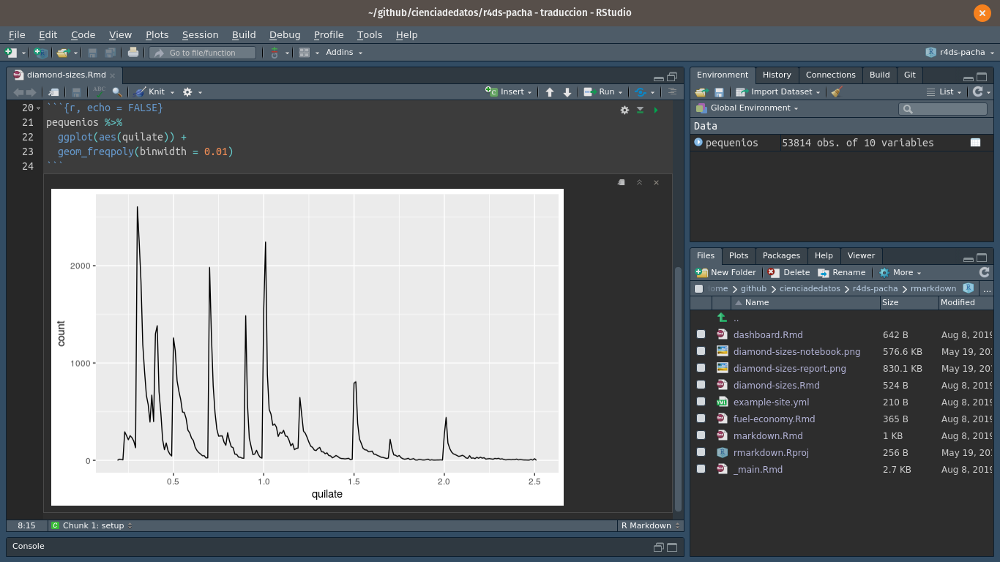
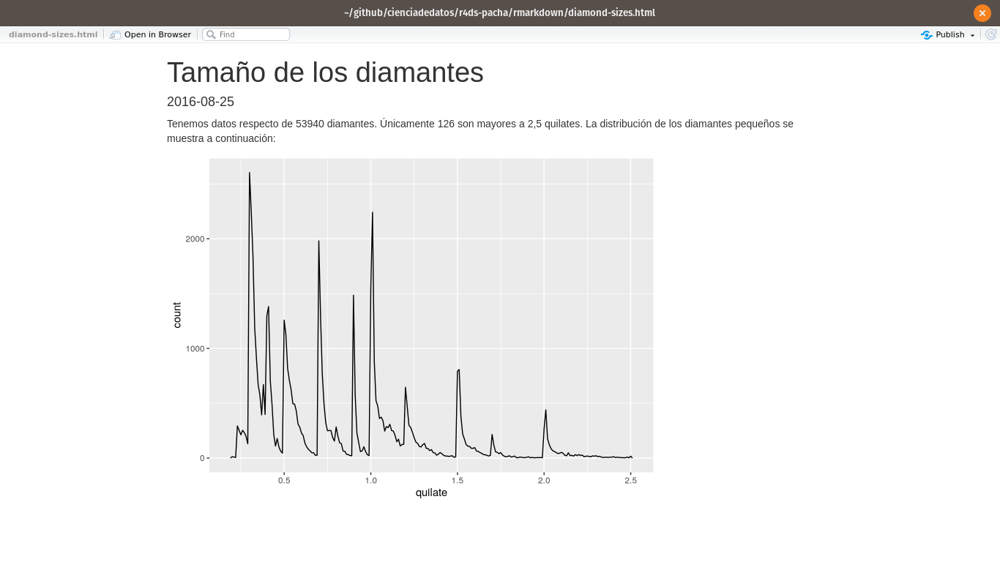

27 R Markdown
27.1 Introducción
R Markdown provee un marco de referencia para la ciencia de datos, combinando tu código, sus resultados, y tus comentarios en prosa. Los documentos de R Markdown son completamente reproducibles y soportan docenas de formatos de salida tales como PDFs, archivos de Word, presentaciones y más.
Los archivos R Markdown están diseñados para ser usados de tres maneras:
Para comunicarse con los tomadores de decisiones, quienes desean enfocarse en las conclusiones, no en el código que subyace al análisis.
Para colaborar con otros científicos de datos (¡incluyendo a tu yo futuro!), quienes están interesados tanto en tus conclusiones como en el modo en el que llegaste a ellas (es decir, el código).
Como un ambiente en el cual hacer ciencia de datos, como un notebook de laboratorio moderno donde puedes capturar no sólo que hiciste, sino también estabas pensando cuando lo hacías.
R Markdown integra una cantidad de paquetes de R y herramientas externas. Esto implica que la ayuda ,en general, no está disponible a través de ?. En su lugar, mientras trabajas a lo largo de este capítulo, y utilizas R Markdown en el futuro, mantén estos recursos cerca:
Hoja de referencia de R Markdown : Help > Cheatsheets > R Markdown Cheat Sheet
Guía de referencia R Markdown : Help > Cheatsheets > R Markdown Reference Guide
Ambas hojas también se encuentran disponibles en http://rstudio.com/cheatsheets>.
27.1.1 Prerequisitos
Necesitas el paquete rmarkdown, pero no necesitas cargarlo o instalarlo explícitamente ya que RStudio hace ambas acciones automaticamente cuando es necesario.
27.2 R Markdown básico
Este es un archivo R Markdown, un archivo de texto plano que tiene la extensión .Rmd:
---
title: "Tamaño de los diamantes"
date: 2016-08-25
output: html_document
---
```{r setup, include = FALSE}
library(datos)
library(ggplot2)
library(dplyr)
pequenios <- diamantes %>%
filter(quilate <= 2.5)
```
Tenemos datos respecto de `r nrow(diamantes)` diamantes. Únicamente
`r nrow(diamantes) - nrow(pequenios)` son mayores a 2,5 quilates.
La distribución de los diamantes pequeños se muestra a continuación:
```{r, echo = FALSE}
pequenios %>%
ggplot(aes(quilate)) +
geom_freqpoly(binwidth = 0.01)
```Contiene tres tipos importantes de contenido:
- Un encabezado YAML (opcional) rodeado de
--- - Bloques de código de R rodeado de
```. - Texto mezclado con texto simple formateado con
# Encabezadoe_itálicas_.
Cuando abres un archivo .Rmd, obtienes una interfaz de notebook donde el código y el output están intercalados. Puedes ejecutar cada bloque de código haciendo clic el ícono ejecutar ( se parece a un botón de reproducir en la parte superior del bloque de código), o presionando Cmd/Ctrl + Shift + Enter. RStudio ejecuta el código y muestra los resultados incustrados en el código:

Para producir un reporte completo que contenga todo el texto, código y resultados, hacer clic en “Knit” o presionar Cmd/Ctrl + Shift + K. Puede hacerse también de manera programática con rmarkdown::render("1-example.Rmd"). Esto mostrará el reporte en el panel viewer y crea un archivo HTML independiente que puedes compartir con otros.

Cuando haces knit el documento (knit en español significa tejer), R Markdown envía el .Rmd a knitr, http://yihui.name/knitr/, que ejecuta todos los bloques de código y crea un nuevo documento markdown (.md) que incluye el código y su output. El archivo markdown generado por knitr es procesado entonces por pandoc, http://pandoc.org/, que es el responsable de crear el archivo terminado. La ventaja de este flujo de trabajo en dos pasos es que puedes crear un muy amplio rango de formatos de salida, como aprenderás en Formatos de R markdown.

Para comenzar con tu propio archivo .Rmd, selecciona File > New File > R Markdown… en la barra de menú. Rstudio iniciará un asistente que puedes usar para pre-rellenar tu archivo con contenido útil que te recuerde como funcionan las principales características de R Markdown.
Las siguientes secciones profundizan en los tres componentes de un documento de R Markdown en más detalle: el texto markdown, los bloques de código y el encabezado YAML.
27.2.1 Ejercicios
Crea un nuevo notebook usando File > New File > R Notebook. Lee las instrucciones. Practica ejecutando los bloques. Verifica que puedes modificar el código, re-ejecútalo, y observa la salida modificada.
Crea un nuevo documento R Markdown con File > New File > R Markdown… Haz clic en el icono apropiado de Knit. Haz Knit usando el atajo de teclado apropiado. Verifica que puedes modificar el input y la actualizacion del output.
Compara y contrasta el notebook de R con los archivos de R markdown que has creado antes. ¿Cómo son similares los outputs? ¿Cómo son diferentes? ¿Cómo son similares los inputs? ¿En qué se diferencian? ¿Qué ocurre si copias el encabezado YAML de uno al otro?
Crea un nuevo documento R Markdown para cada uno de los tres formatos incorporados: HTML, PDF and Word. Haz knit en cada uno de estos tres documentos. ¿Como difiere el output? ¿Cómo difiere el input? (Puedes necesitar instalar LaTeX para poder compilar el output en PDF— RStudio preguntará si esto es necesario).
27.3 Formateo de texto con Markdown
La prosa en los archivos .Rmd está escrita en Markdown, una colección simple de convenciones para dar formato a archivos de texto plano. Markdown está diseñado para ser fácil de leer y fácil de escribir. Es también muy fácil de aprender. La guía abajo muestra como usar el Markdown de Pandoc, una version ligeramente extendida de markdown que R Markdown comprende.
Formato de texto
------------------------------------------------------------
*cursiva* ó _cursiva_
**negrita** __negrita__
`code`
superscript^2^ y subscript~2~
Encabezados
------------------------------------------------------------
# Encabezado de primer nivel
## Encabezado de segundo nivel
### Encabezado de tercer nivel
Listas
------------------------------------------------------------
* Elemento 1 en lista no enumerada
* Elemento 2
* Elemento 2a
* Elemento 2b
1. Elemento 1 en lista enumerada
1. Elemento 2. La numeración se incrementa automáticamente en el output.
Enlaces e imágenes
------------------------------------------------------------
<http://ejemplo.com>
[texto del enlace](http://ejemplo.com)

Tablas
------------------------------------------------------------
Primer encabezado | Segundo encabezado
--------------------- | ---------------------
Contenido de la celda | Contenido de la celda
Contenido de la celda | Contenido de la celdaLa mejor manera de aprender es simplemente probar. Tomará unos días, pero pronto se convertirá en algo natural, y no necesitarás pensar en ellas. Si te olvidas, puedes tener una útil hoja de referencia con Help > Markdown Quick Reference.
27.3.1 Ejercicios
Practica lo que has aprendido crando un CV breve. El título debería ser tu nombre, y deberías incluir encabezados para (por lo menos) educación o empleo. Cada una de las secciones debería incluir una lista con viñetas de trabajos/ títulos obtenidos. Resalta año en negrita.
Usando la referencia rapida de R Markdown, descubre como:
- Agregar una nota al pie.
- Agregar una linea horizontal.
Agregar una cita en bloque.
Copia y pega los contenidos de
diamond-sizes.Rmddesde https://github.com/hadley/r4ds/tree/master/rmarkdown a un documento local de R Markdown. Revisa que puedes ejecutarlo, agrega texto despues del poligono de frecuencias que describa sus características más llamativas.
27.4 Bloques de código
Para ejecutar código dentro de un documento R Markdown, necesitas insertar un bloque. Hay tres maneras para hacerlo:
El atajo de teclado Cmd/Ctrl + Alt + I
El icono “Insertar” en la barra de edición
Digitar manualmente los delimitadores de bloque
```{r}y```.
Obviamente, recomendaría que aprendieras a usar el atajo de teclado. A largo plazo, te ahorrará mucho tiempo.
Puedes continuar ejecutando el código usando el atajo de teclado que para este momento (espero!) ya conoces y amas : Cmd/Ctrl + Enter. Sin embargo, los bloques de código tienen otro atajo de teclado: Cmd/Ctrl + Shift + Enter, que ejecuta todo el código en el bloque. Piensa el bloque como una función. Un bloque debería ser relativamente autónomo,y enfocado alrededor de una sola tarea.
Las siguientes secciones decriben el encabezado de bloque que consiste en ```{r, seguido por un nombre opcional para el bloque, seguido entonces por opciones separadas por comas, y concluyendo con }. Inmediatamente después sigue tu código de R el bloque y el fin del bloque se indica con un ``` final.
27.4.1 Nombres en bloques
Los bloques puede tener opcionalmente nombres : ```{r nombre}. Esto presenta tres ventajas:
- Puedes navegar más fácilmente a bloques específicos usando el navegador de código desplegable abajo a la izquierda en el editor de script:

Los gráficos producidos por los bloques tendrán nombres útiles que hace que sean más fáciles de utilizar en otra parte. Más sobre esto en otras opciones importantes.
Puedes crear redes de bloque cacheados para evitar re-ejecutar cómputos costosos en cada ejecucion. Más sobre esto mas adelante.
Hay un nombre de bloque que tiene comportamiento especial: setup. Cuando te encuentras en modo notebook, el bloque llamado setup se ejecutará automáticamente una vez, antes de ejecutar cualquier otro código.
27.4.2 Opciones en bloques
La salida de los bloques puede personalizarse con options, argumentos suministrados al encabezado del bloque. Knitr provee casi 60 opciones para que puedas usar para personalizar tus bloques de código. Aqui cubriremos las opciones de bloques mas imporantes que usaras más frecuentemente. Puedes ver la lista completa en http://yihui.name/knitr/options/.
El conjunto de opciones más importantes controla si tu bloque de código es ejecutado y que resultados estarán insertos en el reporte terminado:
eval = FALSEevita que código sea evaluado. (Y obviamente si el código no es ejecutado no se generaran resultados). Esto es útil para mostrar códigos de ejemplo,o para deshabilitar un gran bloque de código sin comentar cada línea.include = FALSEejecuta el código, pero no muestra el código o los resultados en el documento final. Usa esto para que código de configuracion que no quieres que abarrote tu reporte.echo = FALSEevita que se vea el código, pero no los resultados en el archivo final. Utiliza esto cuando quieres escribir reportes enfocados a personas que no quieren ver el código subyacente de R.message = FALSEowarning = FALSEevita que aparezcan mensajes o advertencias en el archivo final.results = 'hide'oculta el output impreso;fig.show = 'hide'oculta gráficos.error = TRUEcausa que el render continúe incluso si el código devuelve un error. Esto es algo que raramente quieres incluir en la version final de tu reporte, pero puede ser muy útil si necesitas depurar exactamente que ocurre dentro de tu.Rmd. Es también útil si estas enseñando R y quieres incluir deliberadamente un error. Por defecto,error = FALSEprovoca que el knitting falle si hay incluso un error en el documento.
La siguiente tabla resume que tipos de output suprime cada opción:
| Opción | Ejecuta | Muestra | Output | Gráficos | Mensajes | Advertencias |
|---|---|---|---|---|---|---|
eval = FALSE |
- | - | - | - | - | |
include = FALSE |
- | - | - | - | - | |
echo = FALSE |
- | |||||
results = "hide" |
- | |||||
fig.show = "hide" |
- | |||||
message = FALSE |
- | |||||
warning = FALSE |
- |
27.4.3 Tablas
Por defecto, R Markdown imprime data frames y matrices tal como se ven en la consola:
mtcars[1:5, ]
#> mpg cyl disp hp drat wt qsec vs am gear carb
#> Mazda RX4 21.0 6 160 110 3.90 2.62 16.5 0 1 4 4
#> Mazda RX4 Wag 21.0 6 160 110 3.90 2.88 17.0 0 1 4 4
#> Datsun 710 22.8 4 108 93 3.85 2.32 18.6 1 1 4 1
#> Hornet 4 Drive 21.4 6 258 110 3.08 3.21 19.4 1 0 3 1
#> Hornet Sportabout 18.7 8 360 175 3.15 3.44 17.0 0 0 3 2Si prefieres que los datos tengan formato adicional puedes usar la función knitr::kable. El siguente código genera una Tabla 27.1.
| mpg | cyl | disp | hp | drat | wt | qsec | vs | am | gear | carb | |
|---|---|---|---|---|---|---|---|---|---|---|---|
| Mazda RX4 | 21.0 | 6 | 160 | 110 | 3.90 | 2.62 | 16.5 | 0 | 1 | 4 | 4 |
| Mazda RX4 Wag | 21.0 | 6 | 160 | 110 | 3.90 | 2.88 | 17.0 | 0 | 1 | 4 | 4 |
| Datsun 710 | 22.8 | 4 | 108 | 93 | 3.85 | 2.32 | 18.6 | 1 | 1 | 4 | 1 |
| Hornet 4 Drive | 21.4 | 6 | 258 | 110 | 3.08 | 3.21 | 19.4 | 1 | 0 | 3 | 1 |
| Hornet Sportabout | 18.7 | 8 | 360 | 175 | 3.15 | 3.44 | 17.0 | 0 | 0 | 3 | 2 |
Lee la documentación para ?knitr::kable para ver los otros modos en los que puedes personalizar la tabla. Para una mayor personalización, considera los paquetes xtable, stargazer, pander, tables, y ascii. Cada uno provee un set de herramientas para generar tablas con formato a partir código de R.
Hay también una gran cantidad de opciones para controlar como las figuras estan embebidas o incrustadas. Aprenderás sobre esto en guardando tus gráficos.
27.4.4 Caching
Normalmente, cada knit de un documento empieza desde una sesión limpia. Esto es genial para reproducibilidad, porque se asegura que has capturado cada cómputo importante en el código. Sin embargo, puede ser dolorosos si tienes cómputos que toman mucho tiempo. La solución es cache = TRUE. Cuando está funcionando, esto guarda el output del bloque a un archivo especialmente en el disco. En corridas subsecuentes, knitr revisara si el código ha cambiado y si no ha cambiado, reutilizará los resultados del cache.
El sistema de cache debe ser usado con cuidado, porque por defecto está solo basado en el código, no en sus dependencias. Por ejemplo , aqui el bloque datos_procesados depende del bloque datos_crudos:
```{r datos_crudos}
datos_crudos <- readr::read_csv("un_archivo_muy_grande.csv")
```
```{r datos_procesados, cache = TRUE}
datos_procesados <- datos_crudos %>%
filter(!is.na(variable_important)) %>%
mutate(nueva_variable = transformacion_complicada(x, y, z))
```Caching el bloque processed_data significa que tendrás que re-ejecutar si cambia el pipeline de dplyr, pero no podrás re-ejecutarlo si cambia el read_csv(). Puedes evitar este problema con la opción de bloque dependson:
```{r datos_procesados, cache = TRUE, dependson = "datos_crudos"}
datos_procesados <- datos_crudos %>%
filter(!is.na(variable_important)) %>%
mutate(nueva_variable = transformacion_complicada(x, y, z))
```dependson debería incluir un vector de caracteres para cada bloque en el que el bloque cached dependa. Knitr actualizará los resultados para el vector cached cada vez que detecta que una de sus dependencias ha cambiado.
Nota que los bloques de código no se actualizaran si el archivo un_archivo_muy_grande.csv cambia, porque knitr hace cache solo los cambios dentro del archivo .Rmd. Si quieres seguir los cambios a ese archivo puedes usar la opción cache.extra. Esta es una expresión arbritaria de R que invalidará el cache cada vez que cambie. Una buena función a usar es file.info(): genera mucha información sobre el archivo incluyendo cuando fue su última modificación. Puedes escribir entonces:
```{r datos_crudos, cache.extra = file.info("un_archivo_muy_grande.csv")}
datos_crudos <- readr::read_csv("un_archivo_muy_grande.csv")
```A medida que tus estrategias de caching se vuelven progresivamente mas complicadas, es una buena idea limpiar regularmente todos tus caches con knitr::clean_cache().
Siguiendo el consejo de David Robinson para nombrar estos bloques: cada bloque está nombrado por el objeto primario que crea. Esto hace mucho más fácil entender la especificación dependson.
27.4.5 Opciones globales
A medida que trabajes más con knitr, descubrirás que algunas de las opciones de bloque por defecto no se ajustan a tus necesidades y querrás cambiarlas. Puedes hacer esto incluyendo knitr::opts_chunk$set() en un bloque de código. Por ejemplo, cuando escribo libros y tutoriales seteo:
Esto utiliza mi formato preferido de comentarios, y se asegura que el código y el output se mantienen entrelazados. Por otro lado, si preparas un reporte, puedes fijar:
Esto ocultará el código por defecto, así que solo mostrará los bloques que deliberadamente has elegido mostrar( con echo = TRUE). Puedes considerar fijar message = FALSE y warning = FALSE, pero eso puede hacer más díficil de depurar problemas porque no verías ningun mensajes en el documento final.
27.4.6 Código en la línea
Hay otro modo de incluir código R en un documento R Markdown: directamente en el texto, con:`r `. Esto puede ser muy útil si mencionas propiedades de tu datos en el texto. Por ejemplo, en el documento de ejemplo que utilice al comienzo del capitulo tenía:
Tenemos datos sobre
`r nrow(diamonds)`diamantes. Solo`r nrow(diamonds) - nrow(smaller)`son de más de 2.5 quilates. La distribución de los restante se muestra a continuación:
Cuando hacemos knit, los resultados de estos computós estan insertos en el texto:
Tenemos datos de 53940 diamantes. Solo 126 son de más de 2.5 quilates. La distribución de los restante se muestra a continuación:
Cuando insertas números en el texto, format() es tu amigo. Esto permite establecer el número de digitos para que no imprimas con un grado rídiculo de precision, y una big.mark para hacer que los números sean mas fáciles de leer. Siempre combino estos en una función de ayuda:
27.4.7 Ejercicios
Incluye una seccion que explore como los tamaños de diamantes varian por corte, color y claridad. Asume que escribes un reporte para alguien que no conoce R, y en lugar de fijar
echo = FALSEen cada bloque, fijar una opción global.Descarga
diamond-sizes.Rmdde https://github.com/hadley/r4ds/tree/master/rmarkdown. Agrega una sección que describa los 20 diamantes mas grandes, incluyendo una tabla que muestre sus atributos más importantes.Modifica
diamonds-sizes.Rmdpara usarcomma()para producir un formato de output ordenado. También incluye el porcentaje de diamantes que son mayores a 2.5 quilates.Fija una red de bloques donde
ddepende decyb, y tantobycdependen dea. Haz que cada bloque imprimalubridate::now(), fijarcache = TRUE, y verifica entonces tu comprensión del almacenamiento en cache.
27.5 Solucionando problemas
Los documentos de solución de problemas en R Markdown pueden ser un desafío porque no te encuentras en un ambiente de R interactivo, y necesitarás aprender algunos trucos nuevos. La primer cosa que debes intentar es recrear el problema en una sesión interactiva. Reinicia R, después “Ejecuta todos los bloques” (ya sea en el menú de código , bajo la zona de Ejecutar ), o con el atajo del teclado Ctrl + Alt + R. Si tienes suerte, eso recreará el problema, y podrás descubrir lo que esta ocurriendo interactivamente.
Si eso no ayuda, debe haber algo diferente entre tu ambiente interactivo y el ambiente de R Markdown. Tendrás que explorar sistemáticamente las opciones. La diferencia más común es el directorio de trabajo: el directorio de trabajo de R Markdown es el directorio en el que se encuentra. Revisa que el directorio de trabajo es el que esperas incluyendo getwd() en un bloque.
A continuación, piensa en todas las cosas que pueden causar el error. Necesitarás revisar sistemáticamente que tu sesión de R y tu sesión de R Markdown sean la misma. La manera mas fácil de hacer esto es fijar error = TRUE en el bloque que causa problemas, usa entonces print() y str() para revisar que la configuración es la esperada.
27.6 Encabezado YAML
Puedes controlar otras configuraciones de “documento completo” retocando los parámetros del encabezado YAML. Estarás preguntandote que significa YAML: en inglés “yet another markup language” signifca algo como “otro lenguaje markup”, el cual esta diseñado para representar datos jerárquicos de modo tal que es fácil de escribir y leer para humanos. R Markdown utiliza esto para controlar muchos detalles del output. Aqui discutiremos dos: parámetros del documento y bibliografías.
27.6.1 Parámetros
Los documentos R Markdown pueden incluir uno o mas parámetros cuyos valores pueden ser fijados cuando se renderiza el reporte. Los parámetros son útiles cuandos quieres re-renderizar el mismo reporte con valores distintos con varios inputs clave. Por ejemplo, podrías querer producir reportes de venta por ramas, resultados de examen por alumno, resumenes demográficos por país. Para declarar uno o mas parámetros, utiliza el campo params.
Este ejemplo utiliza el parámetro my_class para determinar que clase de auto mostrar:
---
output: html_document
params:
mi_clase: "suv"
---
```{r setup, include = FALSE}
library(datos)
library(ggplot2)
library(dplyr)
clase <- millas %>% filter(clase == params$mi_clase)
```
# Economía de combustible en vehículos `r params$mi_clase`
```{r, message = FALSE}
ggplot(clase, aes(motor, autopista)) +
geom_point() +
geom_smooth(se = FALSE)
```Como puedes ver, los parámetros estan disponibles dentro de los bloques de código como una lista de solo lectura llamada params.
Puedes escribir vectores átomicos directamente en el encabezado YAML. Puedes también ejecutar arbitrariamente expresiones de R introduciendo previamente el valor del parámetro con !r. Esta es una buena manera de especificar parámetros de fecha/hora.
params:
start: !r lubridate::ymd("2015-01-01")
snapshot: !r lubridate::ymd_hms("2015-01-01 12:30:00")En RStudio, puedes hacer clic en la opción "Knit with Parameters en el menú desplegable Knit para fijar parámetros, renderizar y previsualizar en un simple paso amigable para el usuario. Puedes personalizar el diálogo fijando otras opciones en el encabezado. Ver para más detalles http://rmarkdown.rstudio.com/developer_parameterized_reports.html#parameter_user_interfaces.
De manera alternativa, si necesitas producir varios reportes parametrizados puedes incluir rmarkdown::render() con una lista de params:
Esto es particularmente poderoso en conjunto con purrr:pwalk(). El siguiente ejemplo crea un reporte para cada valor de class que se encuentra en mpg. Primero creamos un data frame que tiene una fila para cada clase, dando el filename del reporte y los params:
reports <- tibble(
class = unique(mpg$class),
filename = stringr::str_c("fuel-economy-", class, ".html"),
params = purrr::map(class, ~ list(my_class = .))
)
reports
#> # A tibble: 7 x 3
#> class filename params
#> <chr> <chr> <list>
#> 1 compact fuel-economy-compact.html <named list [1]>
#> 2 midsize fuel-economy-midsize.html <named list [1]>
#> 3 suv fuel-economy-suv.html <named list [1]>
#> 4 2seater fuel-economy-2seater.html <named list [1]>
#> 5 minivan fuel-economy-minivan.html <named list [1]>
#> 6 pickup fuel-economy-pickup.html <named list [1]>
#> # … with 1 more rowEntonces unimos los nombres de las columnas con los nombres de los argumentos de render(), y utilizamos parallel del paquete purrr para invocar render() una vez a cada fila:
27.6.2 Bibliografías y citas
Pandoc puede generar automaticamente citas y bibliografía en varios estilos. Para usar esta caracteristica, especifica un archivo de bibliografía usando el campo bibliography en el encabezado de tu archivo. El campo debe incluir una ruta del directorio que contiene tu archivo .Rmd al archivo que contiene el archivo de la bibliografía:
Puedes usar muchos formatos comunes de biliografía incluyendo BibLaTeX, BibTeX, endnote, medline.
Para crear una cita dentro de tu archivo .Rmd, usa una clave compuesta de ‘@’ + el identificador de la cita del archivo de la bibliografía. Despues ubica esta cita entre corchetes. Aquí hay algunos ejemplos:
Multiple citas se separan con un `;`: Bla bla[@smith04; @doe99].
Puedes incluir comentarios arbritarios dentro de los corchetes:
Bla bla [ver @doe99, pp. 33-35; también @smith04, ch. 1].
Remover los corchetes para crear una cita dentro del texto @smith04
dice bla, o @smith04 [p. 33] says bla.
Agrega un signo `-` antes de la cita para eliminar el nombre del autor:
Smith dice bla [-@smith04].Cuando R Markdown hace renderiza de tu archivo, construirá y agregará una bibliografía al final del documento. La bibliografía contendrá cada una de las referencias citadas de tu archivo de bibliografía, pero no contendrá un encabezado de sección. Como resultado, es una práctica común finalizar el archivo con un encabezado de sección para la bibliografía, tales como # Referencias or # Bibliografía.
Puedes cambiar el estilo de tus citas y bibliografía referenciando un archivo CSL (del ingles,“citation style language”, lenguaje de estilo de citas) en el campo csl:
Tal y como en el campo de bilbiografía, tu archivo csl debería contener una ruta al archivo. Aquí asumo que el archivo csl está en el mismo directorio que el archivo .Rmd. Un buen lugar para encontrar archivos de estilos para estilos de bibliografía comunes es http://github.com/citation-style-language/styles.
27.7 Aprendiendo más
R Markdown es todavía relativamente reciente, y todavia está creciendo rápidamente. El mejor lugar para estar al tanto de las innovaciones es el sitio oficial de R Markdown: http://rmarkdown.rstudio.com.
Hay dos tópicos importantes que no hemos mencionado aquí: colaboraciones y los detalles de comunicar de manera precisa tus ideas a otros humanos. La colaboración es una parte vital de la ciencia de datos moderna, y podría hacer tu vida mucho mas facil usando herramientas de control de versión, tales como Git y GitHub. Recomendamos dos recursos gratuitos que te enseñaran Git:
“Happy Git with R”: una introducción amigable al usario a Git y GitHub a usuarios de R, de Jenny Bryan. El libro esta disponible de manera libre online en: http://happygitwithr.com
El capitulo “Git and GitHub” de R Packages, de Hadley Wickham. Puedes también leerlo online: http://r-pkgs.had.co.nz/git.html.
Tampoco he mencionado lo que deberías en realidad escribir para poder comunicar claramente los resultados de tu análisis. Para mejorar tu escritura, recomiendo leer cualquiera de estos libros: Style: Lessons in Clarity and Grace de Joseph M. Williams & Joseph Bizup, or The Sense of Structure: Writing from the Reader’s Perspective de George Gopen. Ambos libros te ayudarán a entender la estructura de oraciones y párrafos, y te darán las herramientas para hacer mas clara tu escritura ( Estos libros son bastante caros si son comprados nuevos, pero dado que son usados en muchas clases de inglés hay muchas copias baratas de segunda mano). George Gopen también ha escrito varios artículos cortos sobre escritura en https://www.georgegopen.com/the-litigation-articles.html. Están dirigidos a abogados, pero casi todo también se aplica a las científicas de datos.